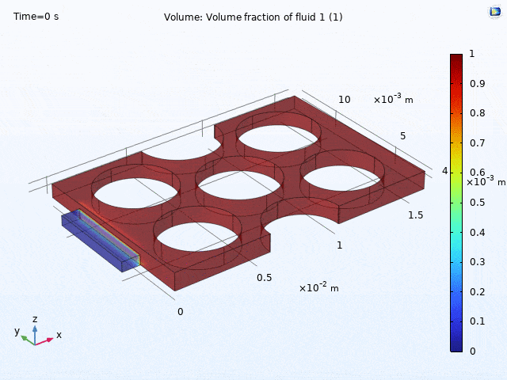

The Problem
Separating oil from water, or an organic solvent from an aqueous stream, is everywhere in chemical processing, from solvent extraction to recovering lithium from produced water. Conventional separators rely on gravity settling, centrifuges, or membranes. They work, but depending on the method, they can be large, slow, energy‑intensive, and costly to run, and membranes in particular need frequent maintenance because they foul.
At the microscale, gravity hardly matters and surface forces take over. That opens a door: instead of fighting surface tension, can we design with it?
The Idea
I study what I call gradient distribution: continuously varying the channel geometry, surface wettability (contact angle), or operating conditions across a device so that capillary pressure pushes each phase in a different direction.
A droplet in a narrowing gap feels a pressure difference across it. Arrange those gaps on purpose, and the device itself becomes the separator.
The central device is a sloped pin plate: a 3D‑printed PETG base with with rows of pins whose diameters decrease across the width while the channel height increases, capped with a clear polycarbonate lid so the flow can be filmed. Gaps between pins range from about 500 to 2,100 µm. The organic phase migrates toward the wide‑gap side, the aqueous phase toward the narrow‑gap side, and each leaves through its own outlet.
What I did
- Built the physics. Coupled Navier–Stokes and phase‑field simulations in COMSOL to track droplets as they move through gradient channels, and developed contour‑based maps of separation time and capillary pressure to find the geometric regimes that work best.
- Turned it into a framework. I’m writing up the approach as the Geometry‑Induced Gradient Distribution (GIGD) framework for passive transport control in microscale multiphase systems.
- Optimized the design. Parameterized pin radii and channel heights so an optimizer can push capillary pressure above hydrodynamic pressure across the device.
- Built and tested hardware. Designed, printed, and tested 15+ prototypes and ran 25+ experiments at flow rates from 2.5 to 20 mL/min.
- Tested the base idea on lithium extraction. A 1D geometry gradient instead of the current 2D design has been applied on a DOE‑funded lithium extraction project and achieved greater than 95% separation efficiency on both produced water and synthetic produced water.
Making The Simulation Work
Two‑phase simulations are unforgiving: a droplet can vanish, smear out, or stall for numerical reasons that have nothing to do with the physics. Getting reliable results took as much careful setup as the physics itself.
- Meshing. Built a user-controlled 3D mesh and refined it where the pins and narrow gaps sit so the interface stays sharp as droplets squeeze through.
- Interface settings. Tuned the phase‑field interface thickness and mobility so the droplet keeps its shape across the full channel instead of dissolving partway through.
- Inlet design. Instead of placing a droplet by hand, used a smooth step function at the inlet to switch from the dispersed phase to the continuous phase, so droplets form naturally.
- Solver settings. Adjusted time‑stepping, tolerances, and segregated solver steps to improve convergence and keep long runs stable.
Simulation Snippet

Why it matters
Low‑cost 3D printing plus passive separation means compact, modular separators that are cheaper to build than large membrane‑based units or machined and laser‑cut microdevices. They also need no surfactants, so there’s nothing extra to contaminate the product. That matters for solvent extraction, water treatment, and critical‑mineral recovery, where the cost of every extra unit operation adds up fast.
What I learned
Patience and a systematic approach beat guesswork. That lesson carries straight over to troubleshooting a real process.